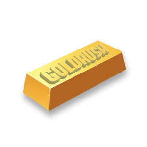
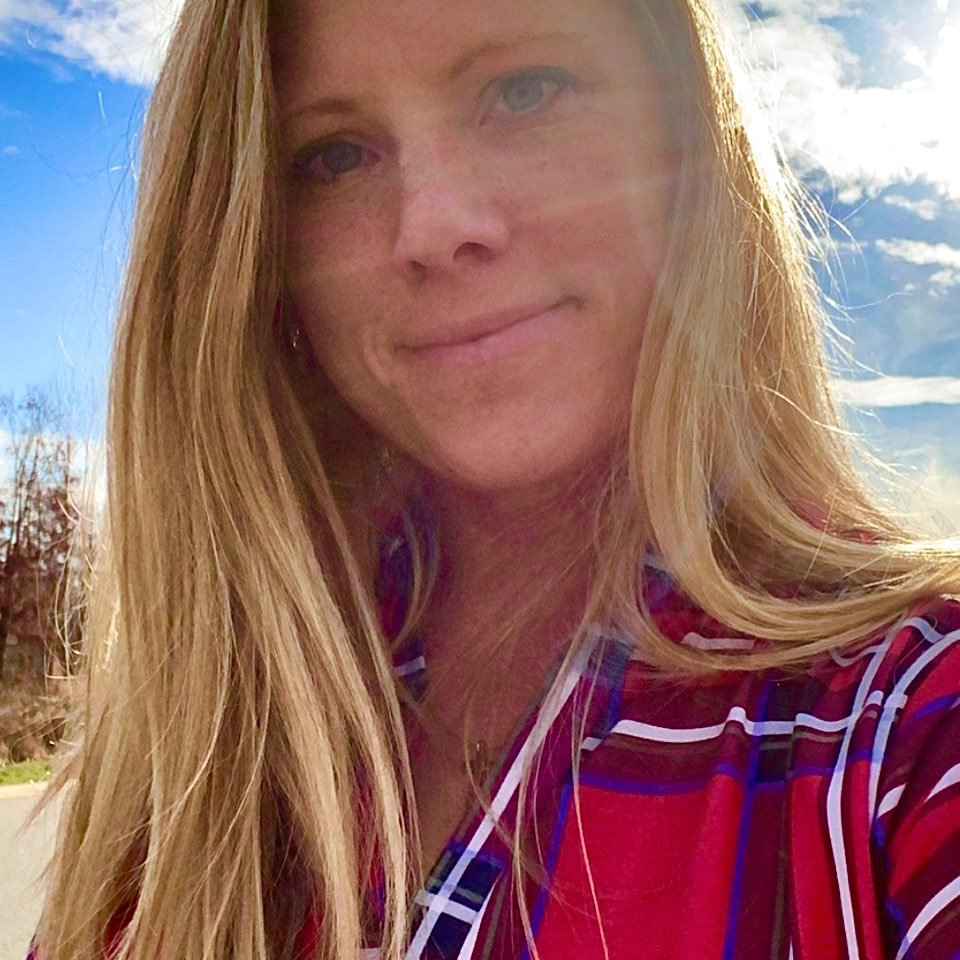
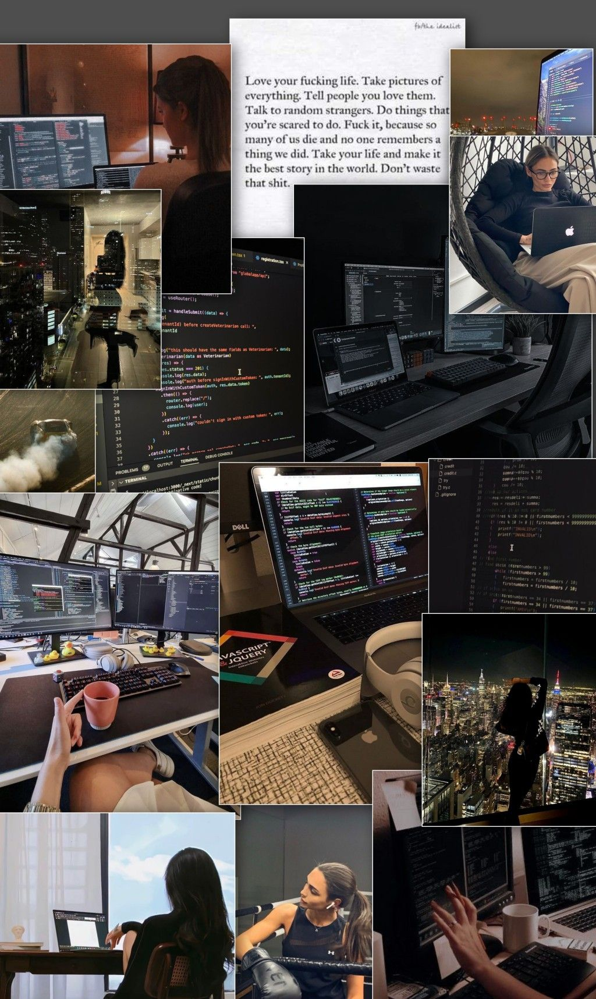
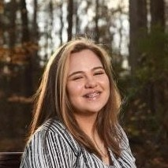
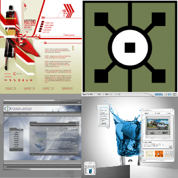

Backend Developer

Tamara is a backend developer with a focus on building scalable, secure, and efficient systems. I specialize in server-side logic, API design, and database architecture, and enjoy turning complex problems into clean, maintainable code..
Inspiration Moodboard:

Backend Developer
Jane is a backend developer specializing in server-side logic and database management.
UI/UX Designer

Brianna is a UI/UX designer who loves to create fun, interactive, and functional user interfaces. Her main inpiration for getting into computer science includes cybersecurity, TouchDesigner, and nostalgic web design.
Inspiration Moodboard:
